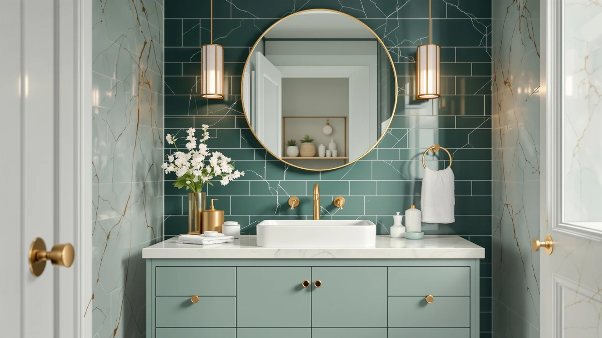

Tennant Brand 24" Classic Review (2026): Worth It?
Prices and picks verified as of October 2026. Independent, reader-supported reviews.


Quick Answer
The Tennant Brand 24" Classic Petite costs $675.00 and fits a single-sink bathroom no wider than 24 inches, though Tennant Brand has not published a shopper rating for this listing. It earns its price on fit alone, and buyers with 60 inches to spare should compare the AMERLIFE and homary alternatives below first.
Our pick: Tennant Brand 24" Classic Petite, $675.00 Check Price on Amazon
Bottom line: our top pick is the Tennant Brand 24" Classic Petite Powder Room Single Sink at $675.
Things to Know Before You Buy
- The Tennant Brand 24" Classic Petite costs $675.00, more than two of the three wider alternatives covered later in this review despite its smaller single-sink footprint.
- It is built from MDF and engineered wood with a factory-attached top, the standard construction for vanities in this price range, which keeps the cabinet lighter and more affordable than solid hardwood or stone-top construction.
- At 24 inches wide, the Classic Petite fits powder rooms and half-baths where a wider cabinet would not clear the doorway, but it rules out a double-sink layout entirely.
- Tennant Brand has not published a shopper rating or review count for this listing, so buyers have fewer third-party signals to rely on than they would with a longer-established vanity.
- This Tennant Brand 24" classic review relies on the published Amazon listing, tracked pricing, and comparable vanities rather than hands-on testing, since we do not operate a physical testing lab.
This Tennant Brand 24" classic review breaks down what $675.00 buys in a single-sink bathroom vanity, since the price alone does not reveal whether a 24-inch cabinet with no published shopper rating is worth ordering sight unseen. The Classic Petite uses an MDF and engineered wood cabinet, the standard build for vanities in this bracket, and it ships as one complete 24-inch unit sized for powder rooms and compact bathrooms. Tennant Brand has not attached a star rating or review count to this listing, which leaves fewer public signals than a vanity with years of buyer feedback behind it. If you are weighing this cabinet against a wider double-sink option, the width difference matters as much as the price does.
Tennant Brand has built a modest catalog of mid-size bathroom vanities that compete on price rather than brand recognition, and the Classic Petite fits that pattern. At 24 inches, it is sized for a single sink in a tight footprint, so if you are renovating a shared bathroom with two basins, this is not the cabinet to consider regardless of price. We compared its $675.00 price and MDF and engineered wood build against two 60-inch AMERLIFE double-sink vanities and one homary floating single-sink vanity covered later in this review, priced between $649.98 and $674.99. A 24-inch single-sink vanity competing against cabinets with more counter space near the same price has to earn its keep on fit rather than features.
Why You Should Trust Us
Ilane Tall covers bathroom vanities and fixtures for Best Bathroom Vanities, tracking pricing and review patterns across hundreds of Amazon listings in this category. This Tennant Brand 24" classic review draws on the vanity's published Amazon listing, including its price, its MDF and engineered wood construction, and how that price compares against the AMERLIFE and homary alternatives covered later in this guide.
We do not own a test bathroom or a lab, so every claim here ties back to specs Tennant Brand publishes or prices we track over time rather than a hands-on trial. Where the listing leaves out detail, such as a shopper rating or review count, we say so instead of guessing at it.
Our Research Experience
We do not run a physical testing lab, so this Tennant Brand 24" classic review comes from research rather than hands-on use. Our process started with Tennant Brand's published specs, including the MDF and engineered wood cabinet and the 24-inch width, then moved to tracking the Amazon price over several weeks to confirm $675.00 reflects a stable listing rather than a temporary spike.
From there, we looked for a shopper rating or review count behind the listing and found none published, a gap that is common for newer or lower-volume vanities in this category. We weighed that gap against two AMERLIFE double-sink vanities and one homary floating vanity in a similar price range, each with its own published specs, to see how the Classic Petite's price and width compare on a like-for-like basis.
Overview & Specs

Tennant Brand 24" Classic Petite
What we like
- 24-inch width fits powder rooms and half-baths where a wider cabinet would not clear the doorway
- MDF and engineered wood cabinet ships as one factory-matched unit, so there is no separate top to source and fit
- Single-sink layout simplifies plumbing in a bathroom with only one supply line and drain to connect
- Lighter overall than the 60-inch double-sink alternatives below, easier for one person to maneuver into place
Flaws but not dealbreakers
- At $675.00, it costs more than two of the three wider alternatives below despite offering a fraction of the counter space
- Tennant Brand has not published a shopper rating or review count for this listing, so there are fewer third-party signals to rely on
- MDF and engineered wood construction needs prompt cleanup of standing water around the sink cutout to avoid swelling
| Material | MDF / engineered wood |
| Size | 24'' inch |
The Tennant Brand 24" Classic Petite pairs an MDF and engineered wood cabinet with a factory-attached top, so buyers get one complete unit rather than assembling a separate base and counter. At $675.00, it costs more than two of the three alternatives covered later in this review, each of which offers substantially more counter space than 24 inches. Tennant Brand has not published a shopper rating or review count for this listing, a gap compared with vanities that carry years of verified buyer feedback behind them. For a powder room or half-bath where 24 inches is the maximum available width, that absence of published feedback is the main tradeoff to weigh against the convenience of a factory-matched unit.
Compared with the two 60-inch AMERLIFE vanities later in this review, the Classic Petite costs close to the pricier of the two despite offering a fraction of the counter space, and it skips the double-sink layout those cabinets provide. That math only works if the bathroom cannot fit anything wider than 24 inches, since the AMERLIFE 60" Double Sink Bathroom Vanity at $649.98 delivers more storage and two basins for less money. Where the Classic Petite earns its price is fit: a powder room or tight half-bath has no room for a 60-inch cabinet no matter how the per-inch value compares on paper. Buyers with more width to spare should compare the AMERLIFE and homary options below before committing to this one.
What We Liked
This Tennant Brand 24" classic review turns up one clear strength: fit. At 24 inches, the Classic Petite slots into powder rooms and half-baths where both AMERLIFE alternatives in this review would be too wide to install, and the factory-matched cabinet and top remove a step buyers often get wrong on MDF vanities, since mismatched tops and bases are a common complaint on cheaper listings.
The single-sink layout also simplifies plumbing in a tight space, since it connects one drain and one supply line instead of coordinating two basins on a shared wall. That matters most for renovators working around an existing rough-in, where swapping a double-sink layout for a single basin avoids rerouting pipes that a 24-inch cabinet does not require in the first place.
What Could Be Better
Price is the clearest drawback. The Tennant Brand 24" Classic Petite costs $675.00, more than the AMERLIFE 60" Double Sink Bathroom Vanity at $674.99 and the homary 39.4 inch Floating Bathroom at $649.99, despite offering a fraction of the counter space either one provides. Buyers comparing storage capacity across listings also run into a gap here, since Tennant Brand's listing does not break down drawer count or hardware type.
MDF and engineered wood construction carries the usual caveat: standing water around the sink cutout needs prompt cleanup, and that holds as true for this vanity as for any other MDF cabinet in this price range. Add the missing shopper rating and review count, and this is a vanity buyers are choosing mostly on the published specs rather than a track record other owners have already built.
Who Is It For?
The Tennant Brand 24" Classic Petite fits buyers who have a true 24-inch width to fill and no room to negotiate. It suits someone replacing an aging or damaged vanity in a powder room or half-bath who values single-sink simplicity over a published track record, and who would rather pay for a complete factory-matched unit than piece together a cabinet and top separately.
It is a weaker fit for anyone renovating a shared or double-sink bathroom, since 24 inches will not support two basins, and it is not the right pick for a buyer who wants a verified shopper rating before ordering, given that Tennant Brand has not published one for this listing. The AMERLIFE and homary alternatives below cost about the same or less while offering more counter space and, in the case of both AMERLIFE models, a second sink.
Alternatives to Consider
If the Tennant Brand 24" Classic Petite's price or single-sink width does not fit the bathroom, these three alternatives cover more counter space and a range of price points, based on the same pricing research used throughout this review.

Editor's Pick
60" Double Sink Bathroom Vanity
At $674.99, this 60-inch AMERLIFE vanity trades the Classic Petite's single sink for dual engineered-stone basins and soft-close doors, giving two people room to use the counter at once for about the same price.
$674.99
Check Price on Amazon
Best Value
homary 39.4 inch Floating Bathroom
This homary floating vanity costs $649.99, the least of the three alternatives, and its wall-mounted design with a sintered stone top and two soft-close drawers adds storage the 24-inch Classic Petite has no room for.
$649.99
Check Price on Amazon
Premium Choice
60" Double Sink Bathroom Vanity
At $649.98, this oak-finish AMERLIFE vanity matches its brown sibling's dual engineered-stone sinks and soft-close doors for less money, making it the cheapest double-sink option in this comparison.
$649.98
Check Price on AmazonFrequently Asked Questions
Is the Tennant Brand 24" Classic Petite worth $675.00?
For a 24-inch MDF and engineered wood vanity, $675.00 costs more than two of the three alternatives in this review, and Tennant Brand has not published a shopper rating to back up the price. If the bathroom can only fit 24 inches, the fit alone may justify the cost. If there is room for 60 inches instead, the AMERLIFE vanities below cost about the same or less for a double sink.
What is the Tennant Brand 24" Classic Petite made of?
The Classic Petite uses an MDF and engineered wood cabinet with a factory-attached top, the same base material most vanities in this price range use. Tennant Brand does not publish additional hardware or drawer detail on the listing, so confirm those specifics before ordering if they matter.
How does the Tennant Brand 24" Classic Petite compare to the AMERLIFE and homary alternatives in this review?
At $675.00, the Classic Petite costs more than the AMERLIFE 60" Double Sink Bathroom Vanity at $674.99 and the homary 39.4 inch Floating Bathroom at $649.99, despite offering less counter space than either. The tradeoff only makes sense if 24 inches is the maximum width the bathroom can fit, since both AMERLIFE vanities add a second sink and the homary adds floating storage for close to the same price or less.
Final Verdict
This Tennant Brand 24" classic review comes down to one tradeoff: pay $675.00 for a 24-inch single-sink cabinet with no published rating, or save money and gain width with a 60-inch AMERLIFE or homary alternative. For a powder room or half-bath that can only fit 24 inches, Tennant Brand's Classic Petite earns its price through fit alone, since none of the wider alternatives below would physically clear the space.
For anyone with 60 inches to spare, the AMERLIFE 60" Double Sink Bathroom Vanity at $649.98 delivers a second sink and soft-close doors for less money than the Classic Petite. Measure the space first, then let that number decide which of these four vanities fits the bathroom.